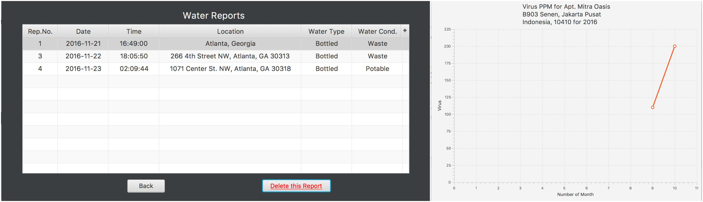

home
projects
papers
coursework
Projects
Crime Map (Android App) | October 2016 - In Progress

The app analyzes various police department logs to visually represent and categorize areas based on the frequency and fatality of the crimes in that area. The app uses MATLAB and Python for back-end data analysis and Andriod/HTML for front-end design. Source code can be viewed here.
Snake on Steroids - VBA Game | August 2016

This game is coded in C and works on the GBA/VBA. It's a harder version of snake, where you must dodge the blue moving enemies and the two green pipes while collecting the food. The enemies' and pipes' movements are randomized. Source code can be viewed here.
Stock Prediction by Dividends | August 2016 - In Progress
Virtually every company on the stock exchange gives out dividends (money given to shareholders periodically (normally every quarter)). When these dividend dates approach (date at which companies pay all current shareholdres), the price of the share tends to increase. These algorithms aim to discern a pattern and corelate these dividend dates with stock prices to determine the best buy and sell dates for each compnay on NASDAQ. It was coded in MATLAB using machine learning and historical information extrapolation. Partial code available here.
Movie Application Website | July 2016

This project incorporates HTML/CSS/PHP and database technology MySQL to create a web application for a theatre. Features include viewing movie details and times at multiple theatres, buying tickets and managing accounts. Source code can be viewed here.
Ringo - Virtual Drum Kit | October 2016
As part of the GSU Hackathon, my team built a virtual drum kit by using two arduino boards as the drum sticks. Based on the movements of the arduino (position, acceleration and pattern of gesture), it interfaced with the Java application and JBL to play the appropriate drum sound. Video demonstration and devpost can be viewed here.
Crowdsource Water Availability - JavaFX App | September 2016
This JavaFX app allows normal users and engineers to submit data about water sources all over the world. Users can then view a map of the water sources available around their area, and see the reports submitted for each location. They can also plot various graphs to compare the metrics of a water source through the years. The aim of this application was based loosely on the NASA challenge found here. Source code can be viewed here.
V4 Inline Car Engine CAD/CAM Model | May 2015
With a team of 4 people, I designed and modeled a simplified version of an inline V4 engine. Inventor was used to design the parts, assemble the parts and finally create a constrained animation of the complete assembly. Video of the animation can be found here. Complete CAD/CAM files and engineering drawings for this project can be downloaded here.